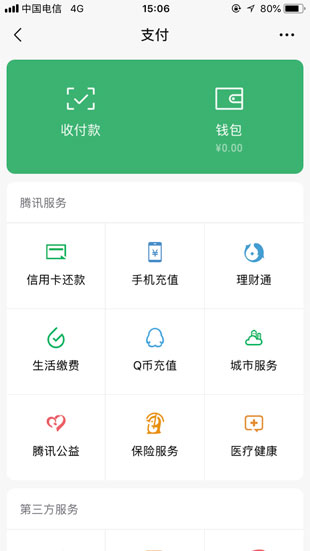
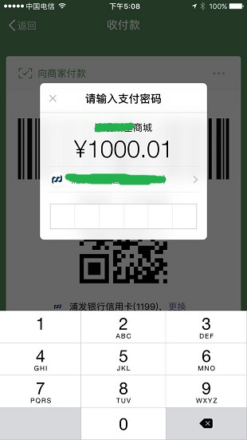
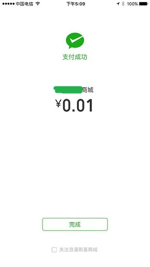
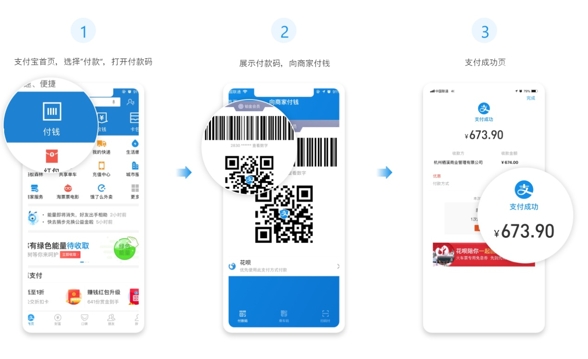
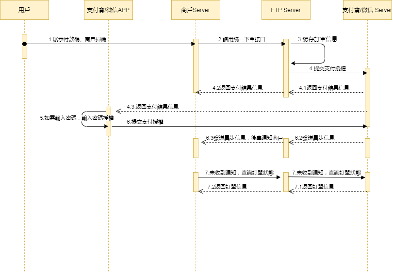

Barcode Payment QR Pay（Offline）
Offline Payment
Barcode Payment API Documentation
| Date | Version | Changes |
|---|---|---|
| 2025-12-19 | 1.0 | Initial draft |
1 Introduction
1.1 Document Overview
Barcode payment refers to a payment method where the user presents the "Pay/Collect - Pay to Merchant" feature in WeChat Pay or the "Barcode/QR Code" in Alipay Wallet for the merchant system to scan, completing the payment directly. It is mainly used in face-to-face offline checkout scenarios.
Barcode payment is suitable for merchants that need to integrate with various merchant systems and have strong reconciliation requirements, such as large supermarkets, restaurants, and chain brands. Merchants must use barcode scanning devices such as barcode scanners to scan barcodes/QR codes on WeChat or Alipay apps to collect payments. Users only need to present their payment code, and all collection operations are completed on the merchant side.
WeChat barcode payment process:
Step (1): The user selects barcode payment. The payment code can be accessed via: WeChat -> "Me" -> "Pay" -> "Pay/Collect";
Step (2): The cashier generates a payment order in the merchant system, and the user confirms the payment amount;
Step (3): The merchant cashier uses a scanning device to scan the user's barcode/QR code, and the merchant POS system submits the payment;
Step (4): The WeChat Pay backend system receives the payment request and determines whether to verify the user's payment password based on the password verification rules. Transactions that do not require password verification will initiate deduction directly. Transactions that require password verification will display a password input field. After a successful payment, WeChat will display a success page; if payment fails, an error message will be shown.
(Note: User payment code barcode rules: 18-digit number starting with 10, 11, 12, 13, 14, or 15)

My Wallet
Barcode payment interface

Enter password and confirm payment

Payment success page
Alipay barcode payment process:
Step (1): The user logs into Alipay, taps "Pay/Collect" on the homepage to enter the payment code interface, and presents it to the merchant;
Step (2): The cashier generates an order in the merchant POS system and enters the collection amount;
Step (3): The cashier uses a scanning device to scan the user's barcode/QR code on their phone, and the merchant POS system submits the payment;
Step (4): After payment, the merchant POS system will receive the result of success or failure, and the user's Alipay app will display the payment guidance or success result.

1.2 Target Readers
For reference and inquiry by technical or business personnel of merchant platform service providers.
2 Solution Overview
2.1 Business Implementation Flow
API call sequence:
The Create Order API, Payment Notification API, and Order Query API all involve the signing process. All calls must be completed on the merchant server side. The sequence diagram is as follows:

3 Data Format
3.1 Submit Data
Uses the standard HTTPS POST protocol. To ensure the receiver receives data correctly, the transmitted data must be signed.
{
"service":"unified.trade.micropay",
"client_id":"1001",
"store_id":"1001001",
"order_no":"aa95f4d66f4440268b3e168053eee75a",
"body":"Test Alipay barcode payment",
"amount":1.0,
"client_ip":"127.0.0.1",
"attach":"",
"auth_code":"282785352345226827",
"nonce_str":"2fb1kvih",
"sign":"C7F8CA843B4A7C47FF4C6C674F3FEFE5",
"lang":"en_US"
}
3.2 Response Data Format
Successful response:
{
"message":"SUCCESS",
"order_no":"aa95f4d66f4440268b3e168053eee75a",
"transaction_id":"FTP202012181701310001",
"submit_time":"20201218170131",
"need_query":"N",
"nonce_str":"b5tz1ea2",
"sign":"9A4F5C97F98F78EF77B89EF8BF746328"
}
Error response:
{
"message":"Missing Merchant ID",
JSON"errors":[
{
"field":"mch_id",
"message":"Missing Merchant ID",
"code":"MISSING_FIELD"
}
]
}
When message returns a value other than SUCCESS, it indicates an API call error.
4 Digital Signature
To ensure the authenticity and integrity of data during transmission, we need to digitally sign the data and verify the signature upon receiving signed data.
Digital signature involves two steps: first, concatenate the original string to be signed according to certain rules, then select a specific algorithm and key to compute the signature result.
4.1 Signature Raw String
Whether it is a request or a response, the signature raw string is assembled as follows: 1. Except for the sign field, all parameters are sorted in ascending order by field name according to ASCII code and concatenated in QueryString format (i.e., key1=value1&key2=value2…). Empty values are not included and do not participate in the signature string. 2. In the signature raw string, field names and field values use their original values without URL encoding.
3. The platform's response or notification messages may include additional parameters due to upgrades. Please allow for this when verifying response signatures.
Example:
Calling an API with the following fields:
{
"client_id":"1001",
"store_id":"1001001",
"service":"unified.trade.micropay",
"order_no":"Me08772e914454656bf26ec8996e35bb",
"amount":"1",
"body":"a chair",
"notify_url":"2031",
"payment_inst":"ALIPAYHK",
"client_ip":"127.0.0.1",
"nonce_str":"1409196838",
"sign":"22C9835251DCF58BB70C78FA8D6448BD"
}
The correct signature field sorting is:
amount=1&body=a chair&client_id=1001&client_ip=127.0.0.1&nonce_str=1409196838¬ify_url=2031&order_no=Me08772e914454656bf26ec8996e35bb&payment_inst=ALIPAYHK&service=unified.trade.micropay&store_id=1001001
4.2 Signature Algorithm
MD5 Signature MD5 is a digest generation algorithm. By appending the merchant communication key to the signature raw string and performing MD5 computation, the resulting digest string is the signature result. For ease of comparison, the signature result is uniformly converted to uppercase characters.
Note: When converting the string to a byte stream for signing, the specified character set encoding should be consistent with the charset parameter. MD5 signature formula: sign = MD5 (raw string+&key=merchant secret key).toUpperCase
Assuming the merchant secret key is: MjNiYWE4NGY2YTMxNDk2MTljODBkMjZkMjk0NjAxY2M=
For example: Assuming the following JSON input parameters: i: After sorting the URL key-value pairs in step a, the resulting string string1 is: amount=1&body=a chair&client_id=1001&client_ip=127.0.0.1&nonce_str=1409196838¬ify_url=2031&order_no=Me08772e914454656bf26ec8996e35bb&payment_inst=ALIPAYHK&service=unified.trade.micropay&store_id=1001001 ii: After step b, the sign is:
sign = md5(string1+&key=merchant secret key).toUpperCase
The actual encrypted string is:
sign = md5(amount=1&body=a chair&client_id=1001&client_ip=127.0.0.1&nonce_str=1409196838¬ify_url=2031&order_no=Me08772e914454656bf26ec8996e35bb&payment_inst=ALIPAYHK&service=unified.trade.micropay&store_id=1001001&key=MjNiYWE4NGY2YTMxNDk2MTljODBkMjZkMjk0NjAxY2M=).toUpperCase
The final signature obtained is: 22C9835251DCF58BB70C78FA8D6448BD
The sign and lang fields do not participate in API signature. The same applies to the decryption rules for API response parameters.
4.3 Request Headers
Request parameters:
| Field | Variable | Required | Type | Description |
|---|---|---|---|---|
| Content Type | Content-Type | Yes | String(32) | Value: application/json, request content type |
5 API Description
5.1 Create Order API
5.1.1 Business Function
Initialize an order request. Through this request, a barcode is generated for scanning payment.
5.1.2 Interaction Mode
Request: Backend synchronous request mode
Response + Notification: Backend request interaction mode + Backend notification interaction mode
5.1.3 Request Parameters
Request URL: https://api.fintechpaymenthub.com/openapi/v1/pay
Request the API via POST JSON body
| Field | Variable | Required | Type | Description |
|---|---|---|---|---|
| API Type | service | Yes | String(40) | Fixed: unified.trade.micropay |
| Merchant client ID | client_id | Yes | String(32) | Merchant client ID |
| Store ID | store_id | Yes | String(50) | Store ID |
| Merchant order no | order_no | Yes | String(32) | Order number within the merchant system, up to 32 characters, may contain letters, must be unique in the merchant system |
| Product description | body | Yes | String(127) | Product description information |
| Amount | amount | Yes | String(15) | Total order amount (must be greater than 0), in yuan. |
| Terminal IP | client_ip | Yes | String(16) | IP of the machine where the order was generated |
| Additional info | attach | No | String(127) | Merchant additional information, can be used as an extended parameter |
| Payment code | auth_code | Yes | String(1024) | Payment code. The device reads the barcode or QR code presented by the user |
| Random string | nonce_str | Yes | String(32) | Random string, no longer than 32 characters, a different value must be submitted each time |
| Signature | sign | Yes | String(32) | See Chapter 4 "Signature Rules" |
| Language | lang | No | String(32) | Language |
5.1.4 Response
Data is returned immediately in JSON format
| Field | Variable | Required | Type | Description |
|---|---|---|---|---|
| Merchant order no | order_no | Yes | String(32) | Order number generated by the merchant |
| FTP order no | transaction_id | Yes | String(26) | Order number generated by FTP |
| Submit time | submit_time | Yes | String(50) | Format: yyyyMMddhhmmss |
| Query required | need_query | No | String(1) | Used to determine whether the query API needs to be called. When the value is Y or not returned, the query API needs to be called; when the value is N, no query is needed |
| Result message | message | Yes | String(500) | Describes the query result. SUCCESS indicates success; otherwise, other error messages are returned |
| Random string | nonce_str | Yes | String(32) | Random string, no longer than 32 characters |
| Signature | sign | Yes | String(32) | See Chapter 4 "Signature Rules" |
5.1.5 Test Cases
Test cases are provided for convenience
Submitted data:
| Example |
|---|
| { "service":"unified.trade.micropay", "client_id":"1001", "store_id":"1001001", "order_no":"aa95f4d66f4440268b3e168053eee75a", "body":"Test Alipay barcode payment", "amount":1.0, "client_ip":"127.0.0.1", "attach":"", "auth_code":"282785352345226827", "nonce_str":"2fb1kvih", "sign":"C7F8CA843B4A7C47FF4C6C674F3FEFE5", "lang":"en_US" } |
Successful response:
| Example |
|---|
| { "message":"SUCCESS", "order_no":"aa95f4d66f4440268b3e168053eee75a", "transaction_id":"FTP202012181701310001", "submit_time":"20201218170131", "need_query":"N", "nonce_str":"b5tz1ea2", "sign":"9A4F5C97F98F78EF77B89EF8BF746328" } |
5.2 Order Query API
5.2.1 Business Function
Query specific order information on the platform by merchant order number or FTP order number.
5.2.2 Interaction Mode
Backend system call interaction mode
5.2.3 Request Parameters
Request URL: https://api.fintechpaymenthub.com/openapi/v1/query Request via POST JSON body
| Field | Variable | Required | Type | Description |
|---|---|---|---|---|
| API Type | service | Yes | String(40) | Fixed: unified.trade.micropay |
| Merchant client ID | client_id | Yes | String(32) | Merchant client ID |
| Store ID | store_id | Yes | String(50) | Store ID |
| Merchant order no | order_no | No | String(32) | Order number generated by the merchant |
| FTP order no | transaction_id | No | String(26) | FTP order number. At least one of order_no and transaction_id is required. When both are present, transaction_id takes priority |
| Random string | nonce_str | Yes | String(32) | Random string, no longer than 32 characters |
| Signature | sign | Yes | String(32) | See Chapter 4 "Signature Rules" |
| Language | lang | No | String(32) | Language |
5.2.4 Response
Data is returned immediately in JSON format
| Field | Variable | Required | Type | Description |
|---|---|---|---|---|
| FTP order no | transaction_id | Yes | String(26) | Order number generated by FTP |
| Merchant order no | order_no | Yes | String(32) | Order number generated by the merchant |
| Store ID | store_id | Yes | String(50) | Store ID |
| Submit time | submit_time | Yes | String(32) | Format: yyyyMMddhhmmss |
| Trade state | trade_state | Yes | String(32) | SUCCESS — Payment successful NOTPAY — Pending payment PROCESSING — Processing REFUND — Refund CANCEL — Closed FAIL — Failed |
| Amount | amount | Yes | Double | Total order amount (must be greater than 0), in RMB yuan. For example, if the total order amount is 1 yuan, amount is 1. |
| Currency | currency | Yes | String(3) | 3-character ISO currency code in uppercase letters. CNY for RMB. |
| Payer | payer | Yes | String(50) | Payer |
| Payment completion time | pay_finish_time | Yes | String(32) | Payment completion time, format: yyyyMMddhhmmss. For example, 9:10:10 on December 27, 2009 is represented as 20091227091010. Timezone is GMT+8 Beijing. |
| Product description | body | Yes | String(127) | Product description information |
| Refund amount | refund_amount | Yes | Double | Refund amount, in RMB yuan. For example, if the total order amount is 1 yuan, amount is 1. |
| Third-party merchant no | out_transaction_id | Yes | String(32) | Corresponds to the transaction number in the Alipay transaction record billing details |
| Additional info | attach | No | String(127) | Merchant data package, returned as-is |
| Result message | message | Yes | String(500) | Describes the query result. SUCCESS indicates success; otherwise, other error messages are returned |
| Random string | nonce_str | Yes | String(32) | Random string, no longer than 32 characters |
| Signature | sign | Yes | String(32) | See Chapter 4 "Signature Rules" |
5.2.5 Test Cases
Test cases are provided for convenience
Submitted data:
| Example |
|---|
| { "service":"unified.trade.micropay", "order_no":"", "transaction_id":"FTP202012181701310001", "client_id":"1001", "store_id":"1001001", "nonce_str":"hsdrb9d2", "sign":"DA4D25974E14EC74A0D180101A291B96", "lang":"en_US" } |
Successful response:
| Example |
|---|
| { "message":"SUCCESS", "transaction_id":"FTP202012181701310001", "order_no":"aa95f4d66f4440268b3e168053eee75a", "store_id":"1001001", "submit_time":"20201218170131", "trade_state":"SUCCESS", "amount":1, "currency":"HKD", "payer":"-", "pay_finish_time":"20201028120557", "body":"Test Alipay barcode payment", "refund_amount":0, "nonce_str":"wdur19hg", "sign":"D0A9E5585FF49C0CB138AFD31B35EF6C", "out_transaction_id":"127500000158202011100364937974", "attach":"" } |
5.3 Refund API
5.3.1 Business Function
The merchant initiates a refund for an order that has already been successfully paid. The operation result is returned synchronously within the same session.
I. Refund Method
Currently, only original-path refund is supported.
Note: Refunds to bank cards are not instant; processing speed varies by bank. Generally, refunds arrive within 1-3 business days after initiation.
For partial refunds of the same order, the same order number and different out_refund_no must be used. If a refund fails and is resubmitted, the original out_refund_no must be used. The total refund amount cannot exceed the amount actually paid by the user (voucher amounts cannot be refunded).
II. Refund Restrictions
Merchants should be aware of refund restrictions when performing refund operations to avoid initiating refund requests that will not succeed. The following are the main refund restrictions:
1. On the platform, as long as the cumulative refund amount does not exceed the total payment amount of the transaction, a transaction can be refunded multiple times. The refund application number (this parameter exists in the refund API) uniquely identifies a single refund, not the transaction number. The refund application number is generated by the merchant, so the merchant
must ensure the uniqueness of the refund application number. Merchants should pay special attention during the refund process — only when a refund failure is confirmed can another refund be initiated.
2. Currently, most banks support full refunds and partial refunds, but a few banks do not support full or partial refunds, or
do not support refunds at all. In such cases, merchants can coordinate with the buyer to refund to the Alipay account.
Currently, only the keyless refund API is provided. Merchants who need the keyed refund API, please contact sales for details.
5.3.2 Interaction Mode
Backend system call interaction mode
5.3.3 Request Parameters
Request URL: https://api.fintechpaymenthub.com/openapi/v1/refund Request via POST JSON body
| Field | Variable | Required | Type | Description |
|---|---|---|---|---|
| API Type | service | Yes | String(40) | Fixed: unified.trade.micropay |
| Merchant client ID | client_id | Yes | String(32) | Merchant client ID |
| Store ID | store_id | Yes | String(50) | Store ID |
| Merchant order no | order_no | Yes | String(32) | Original order number generated by the merchant |
| FTP order no | transaction_id | Yes | String(26) | Original order number generated by FTP |
| Merchant refund no | out_refund_no | Yes | String(32) | Merchant refund number, up to 32 characters, may contain letters, must be unique in the merchant system. Multiple requests with the same refund number are treated as a single order and only one refund is processed. If a refund is unsuccessful, please resubmit with the original refund number to avoid duplicate refunds. |
| Remarks | remarks | No | String(255) | Refund remarks |
| Refund amount | refund_fee | Yes | String(15) | Total refund amount, in yuan. Partial refunds are supported |
| Random string | nonce_str | Yes | String(32) | Random string, no longer than 32 characters |
| Signature | sign | Yes | String(32) | See Chapter 4 "Signature Rules" |
| Language | lang | No | String(32) | Language |
5.3.4 Response
Data is returned immediately in JSON format
| Field | Variable | Required | Type | Description |
|---|---|---|---|---|
| FTP order no | transaction_id | Yes | String(26) | Order number generated by FTP |
| Merchant order no | order_no | Yes | String(32) | Order number generated by the merchant |
| Merchant refund no | out_refund_no | Yes | String(32) | Merchant refund number, up to 32 characters, may contain letters, must be unique in the merchant system. Multiple requests with the same refund number are treated as a single order and only one refund is processed. If a refund is unsuccessful, please resubmit with the original refund number to avoid duplicate refunds. |
| Submit time | submit_time | Yes | String(32) | Format: yyyyMMddhhmmss |
| Order amount | amount | Yes | Double | Order amount, in yuan |
| Refund amount | refund_amount | Yes | Double | Refund amount, in yuan |
| Result message | message | Yes | String(500) | Describes the query result. SUCCESS indicates success; otherwise, other error messages are returned |
| Random string | nonce_str | Yes | String(32) | Random string, no longer than 32 characters |
| Signature | sign | Yes | String(32) | See Chapter 4 "Signature Rules" |
5.3.5 Test Cases
Test cases are provided for convenience
Submitted data:
| Example |
|---|
| { "service":"unified.trade.micropay", "client_id":"1001", "store_id":"1001001", "order_no":"", "transaction_id":"FTP202012181704000001", "out_refund_no":"T1608282248284", "remarks":"Test Pay Orders", "refund_fee":1.0, "nonce_str":"y49ietq9", "sign":"2D2FDE5CCB9AED316C96B04FF13431A9", "lang":"en_US" } |
Successful response:
| Example |
|---|
| { "message":"SUCCESS", "order_no":"068c83a21e28408a93fcf9d42a8dce61", "transaction_id":"FTP202012181704000001", "out_refund_no":"T1608282248284", "submit_time":"20201218170408", "amount":1, "refund_amount":1, "nonce_str":"5lrf53la", "sign":"D41D8CD98F00B204E9800998ECF8427E" } |
5.4 Refund Query API
5.4.1 Business Function
After submitting a refund application, query the refund status by calling this API.
5.4.2 Interaction Mode
Backend system call interaction mode
5.4.3 Request Parameters
Request URL: https://api.fintechpaymenthub.com/openapi/v1/refundQuery Request via POST JSON body
| Field | Variable | Required | Type | Description |
|---|---|---|---|---|
| API Type | service | Yes | String(40) | Fixed: unified.trade.micropay |
| Merchant client ID | client_id | Yes | String(32) | Merchant client ID |
| Store ID | store_id | Yes | String(50) | Store ID |
| Merchant order no | order_no | No | String(32) | Merchant order number returned by the refund, also the merchant order number of the order |
| FTP order no | transaction_id | No | String(26) | FTP order number returned by the refund |
| Merchant refund no | out_refund_no | No | String(32) | Refund number generated by the merchant |
| Third-party refund no | to_order_sn | No | String(255) | Third-party refund number. If both exist, the priority is: to_order_sn > out_refund_no > transaction_id > order_no |
| Random string | nonce_str | Yes | String(32) | Random string, no longer than 32 characters |
| Signature | sign | Yes | String(32) | See Chapter 4 "Signature Rules" |
| Language | lang | No | String(32) | Language |
5.4.4 Response
Data is returned immediately in JSON format
| Field | Variable | Required | Type | Description |
|---|---|---|---|---|
| FTP order no | transaction_id | Yes | String(26) | FTP order number of the corresponding order |
| Merchant order no | order_no | Yes | String(32) | Merchant order number of the corresponding order |
| Refund amount | total_fee | Yes | Double | Total refund amount, in yuan |
| Refund count | refund_count | Yes | Int | Number of refund records |
| Merchant refund no | out_refund_no_n | Yes | String(32) | Merchant refund number, up to 32 characters, may contain letters, must be unique in the merchant system. Multiple requests with the same refund number are treated as a single order and only one refund is processed. If a refund is unsuccessful, please resubmit with the original refund number to avoid duplicate refunds. First refund return field: out_refund_no_1, Second refund return field: out_refund_no_2, And so on. |
| FTP refund order no | refund_id_n | Yes | String(32) | FTP refund order number |
| Third-party refund no | to_order_sn_n | Yes | String(32) | Third-party refund number |
| Refund amount | refund_amount_n | Yes | Double | Refund amount, in yuan |
| Refund time | refund_time_n | Yes | String(14) | yyyyMMddHHmmss |
| Refund status | refund_status_n | Yes | String(16) | Refund status: SUCCESS — Refund successful FAIL — Refund failed PROCESSING — Refund in progress NOTSURE — Undetermined, merchant needs to resubmit with the original refund number CHANGE — Transferred to disbursement. The refund to the bank failed because the user's bank account is invalid or frozen, causing the original-path refund to fail. Funds flow back to the merchant's cash account, requiring manual intervention by the merchant to process the refund via offline transfer or platform transfer. |
| Result message | message | Yes | String(500) | Describes the query result. SUCCESS indicates success; otherwise, other error messages are returned |
| Random string | nonce_str | Yes | String(32) | Random string, no longer than 32 characters |
| Signature | sign | Yes | String(32) | See Chapter 4 "Signature Rules" |
5.4.5 Test Cases
Test cases are provided for convenience
Submitted data:
| Example |
|---|
| { "service":"unified.trade.micropay", "client_id":"1001", "store_id":"1001001", "transaction_id":"FTP202012181704000001", "order_no":"", "out_refund_no":"", "to_order_sn":"", "nonce_str":"1a596qd6", "sign":"A3A4637F703459C3E7F889BF9265F1F4", "lang":"en_US" } |
Successful response:
| Example |
|---|
| { "message":"SUCCESS", "transaction_id":"FTP202012181624320001", "order_no":"TALWEBO20210514114611632", "total_fee":1, "refund_count":1, "nonce_str":"401n5buh", "out_refund_no_1":"T9802e9e18ff340548357bfba730d407", "refund_id_1":"FTP202105141152540001", "refund_amount_1":1, "to_order_sn_1":"121500000214202105141132335702", "refund_time_1":"20210514115254", "refund_status_1":"SUCCESS", "sign":"7A5CA8D8BD0F4E9F78641F9433FD3A4D" } |
6 Error Codes
| Error Code | Description |
|---|---|
| MISSING_FIELD | Field not provided |
| INVALID_FIELD | Field validation error |
| NO_EXISTS | Data does not exist |
| OTHER | Other error |
| INVALID_SCOPE | Data out of range |
| INVALID_LENGTH | Data length exceeds limit |
| INCORRECT_SIGNATURE | Invalid signature |
| EXPIRED_ORDER | Order has expired |
| PAY_GATEWAY_FAIL | Payment gateway error |
| UNKNOWN_ERROR | Unknown error |
| XML_FORMAT_ERROR | XML format error |
| REQUIRE_POST_METHOD | Please use POST method |
| ACCESS_DENIED | Access denied |
| POST_DATA_EMPTY | POST data is empty |
| NOT_UTF8 | Encoding format error |
| ORDER_CLOSED | Order has been closed |
| NO_AUTH | Insufficient permissions |
| LACK_PARAMS | Missing parameters |
| INVALID_STATUS | Invalid status |
| INVALID_SERVICE | Invalid API type |
| SN_IS_EXISTS | Serial number already exists |
| NOTIFY_FAIL | Notification error |
| URL_FORMAT_ERROR | Invalid URL format |
| IP_FORMAT_ERROR | Invalid IP format |
| DATE_FORMAT_ERROR | Invalid date format |
| TRADE_NOT_EXIST | Transaction does not exist |
| TRADE_HAS_SUCCESS | Transaction has already been paid |
| TRADE_FAILED | Transaction failed |
| TRADE_TIMEOUT | Transaction timed out |
| INVALID_ORDER_STATUS | Invalid order status |
| REVERSE_FAILED | Reversal authorization failed |
| DEDUCTIONS_FAILED | Deduction failed |
| REFUND_FAILED | Refund failed |
| INVALID_CLIENT_ID | Invalid client ID |
| INVALID_STORE_ID | Invalid store ID |
| INVALID_AMOUNT | Invalid transaction amount |
| INVALID_REFUND_FEE | Invalid refund amount |
| VALID_FLOW_FAIL | Request too frequent |
| UNSUPPORTED_SERVICE | Unsupported API type |
| DATA_NOT_EXIST | Queried data does not exist |
| ACCOUNT_LOCKED | Merchant or store account is locked |